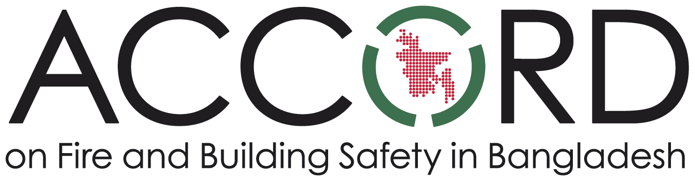
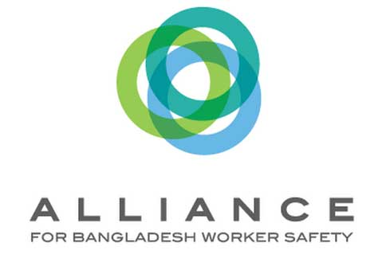

Efforts Post Rana Plaza
After the Rana Plaza Collapse, two groups emerged.
IndustriALL Gloabl Union, UNI Global Union, The Clean Clothes Campaign, The Workers Rights Consortium, and other NGO's, sponsored and created "The Accord on Fire and Building Safety in Bangladesh" (Accord), signed on May 15th 2013, a few weeks after the Rana Plaza collapse. It is binding agreement between global brands and retailers and trade unions designed to build a safe and healthy Bangladeshi ready-made garment (RMG) Industry.
Most North American retailers did not sign the accord. Companies like Gap Inc. and Walmart cited liability concerns. Therefore, Walmart became a founding member of the "Alliance for Bangladesh Worker Safety" (Alliance) is a group of 28 major global retailers, coming together to develop and launch the Bangladesh Worker Safety Initiative, a binding, five-year undertaking with the intent of improving safety in Bangladeshi (RMG) factories.
On May 13, 2013 , H&M amongst other companies announced that they would sign ACCORD. The official list of signatories for ACCORD includes over 200 global brands and the official list for Alliance includes 29 global brands.


- An independent inspection program supported by brands in which workers and trade unions are involved Public disclosure of all factories, inspection reports and corrective action plans (CAP)
- A commitment by signatory brands to ensure sufficient funds are available for remediation and to maintain sourcing relationships
- Democratically elected health and safety committees in all factories to identify and act on health and safety risks
- Worker empowerment through an extensive training program, complaints mechanism and right to refuse unsafe work.
- Standards & Inspections: Assessments are conducted by independent Qualified Assessment Firms (QAFs), to provide factory owners with a technical understanding of the fire safety and structural concerns related to their facilities, and prompt action plans that aim to systematically and sustainably improve safety conditions for garment workers.
- Remediation: After an inspection takes place and attention shifts to remediation, the Alliance works with factories to appropriately address safety violations
- Worker Empowerment: Providing factory workers with the opportunity to voice safety concerns, and to ensuring and supporting the establishment of (democratically-elected) Safety Committees in accordance with the Bangladesh Labour Rules.
- Training: Fundamental knowledge and awareness of basic fire prevention, fire protection and emergency evacuation.
- Sustainability: Coordinate and collaborate effectively with all groups committed to bringing about the sustainable transformation of the garment sector in Bangladesh